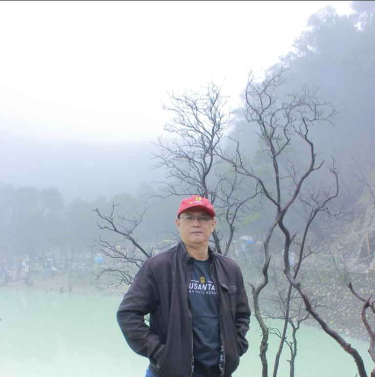

Portal Resmi Kaprodi
Politeknik Prasetiya Mandiri Bogor
Menguasai Arsitektur Komputasi, Memimpin Inovasi dari Silikon hingga Sistem Cerdas Terintegrasi.
Berkomitmen teguh pada keunggulan rancang bangun sistem komputasi terintegrasi, arsitektur silikon & semikonduktor, sistem benam (embedded systems), serta riset hardware-software co-design mutakhir demi kemandirian teknologi nasional.

Taufik Tirkaamiasa, S.Kom., M.Kom.
Ketua Program Studi D3 Teknik Komputer
“Menjembatani batas antara arsitektur silikon, sistem benam (embedded systems), dan kecerdasan komputasi tepi (Edge AI) untuk kedaulatan teknologi nasional.”
Capaian & Rekam Jejak Unggulan Departemen
Lab Hardware, IC Design & FPGA, IoT & Embedded Systems, serta Robotika Otomasi berstandar industri.
Paten terdaftar dan prototipe perangkat tertanam (embedded devices & microchips) siap industrialisasi.
Kemitraan industri semikonduktor, fabless IC design, dan manufaktur hardware global untuk magang & tape-out.
Trofi Kontes Robot Indonesia (KRI), Kontes Robot Terbang (KRTI), dan olimpiade sistem tertanam internasional.
Visi 2030 & Tiga Pilar Kepemimpinan Kaprodi
Menjadikan Program Studi Teknik Komputer sebagai rujukan unggul dalam rancang bangun sistem komputasi terintegrasi (hardware-software co-design), arsitektur mikroelektronika, dan rekayasa cerdas yang berdaya saing global.
Arsitektur Komputer & VLSI/FPGA
Penguatan riset mikroarsitektur prosesor RISC-V, desain logika digital, sintesis sirkuit terpadu (IC Design), dan akselerator komputasi berbasis FPGA/ASIC.
“Pendidikan di era disrupsi menuntut keseimbangan antara kedalaman logika fundamental dan kegesitan mengadopsi teknologi baru.”
Rekayasa perangkat keras dan sistem benam adalah fondasi sejati kedaulatan teknologi digital. Di Teknik Komputer, mahasiswa tidak sekadar menulis kode perangkat lunak di lapisan abstrak, melainkan menguasai interaksi mendalam antara elektron, silikon, mikroarsitektur, dan firmware sistem otonom cerdas.
Taufik Tirkaamiasa, S.Kom., M.Kom.
Ketua Program Studi S1 Teknik Komputer
verified_user Standar Kompetensi Lulusan
Program Unggulan & Ekosistem Layanan Mahasiswa
Inisiatif terstruktur yang dirancang langsung di bawah supervisi Kaprodi untuk mempercepat kelulusan, memperkaya portofolio, dan mendampingi kesehatan karir mahasiswa.
Hands-on VLSI & FPGA Tape-out Lab
Fasilitas EDA tools standar industri dan bimbingan tape-out sirkuit terpadu mini (IC Design) berbasis arsitektur terbuka RISC-V.
Inkubasi Robotika & Kontes KRI/KRTI
Pembinaan intensif tim robot berkaki, robot SAR terbang, dan mobil otonom dengan pendanaan suku cadang dan ruang bengkel 24 jam.
Magang Industri Semikonduktor & IoT
Penempatan magang tersertifikasi pada industri assembly semikonduktor, fabless IC design, dan manufaktur perangkat telekomunikasi.
Capstone Hardware & System Prototyping
Dukungan dana fabrikasi PCB multi-layer, komponen sensorik, dan bimbingan paten untuk prototipe alat fisik tugas akhir mahasiswa.
Pengumuman & Timeline Resmi Prodi
Workshop Desain Sirkuit Terpadu (IC Design & RISC-V SoC)
Pelatihan intensif pemodelan Verilog/VHDL dan alur sintesis chip bersama praktisi semikonduktor internasional.
Open Recruitment Tim Robotika & Otomasi Teknik Komputer
Penerimaan divisi Mechanical Design, Electronic Hardware/PCB, dan Firmware/Algorithm untuk KRI Regional & Nasional.
Seminar Nasional: Hardware Security, Firmware Trust & Edge AI
Membahas kerentanan sirkuit terpadu terhadap side-channel attack dan akselerasi machine learning pada mikroprosesor berdaya rendah.
Open Office Hour Kaprodi
Sesi konsultasi langsung tanpa perantara formal, dikhususkan untuk mendengar aspirasi, keluhan studi, atau ide riset mahasiswa.
Permohonan Audiensi & Konsultasi Kaprodi
Silakan isi formulir di bawah ini untuk mengajukan jadwal konsultasi tatap muka maupun daring dengan Ketua Program Studi atau Sekretaris Departemen.
Permohonan Berhasil Dikirimkan!
Sekretariat Kaprodi akan mengonfirmasi slot waktu Anda melalui WhatsApp & Email dalam waktu maksimal 1x24 jam kerja.
Politeknik Prasetiya Mandiri Bogor & Ruang Kaprodi Teknik Komputer
Pusat administrasi akademik, legalisir ijazah/transkrip, persuratan rekomendasi, dan audiensi resmi.